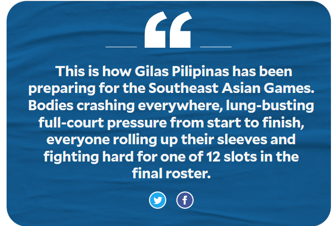
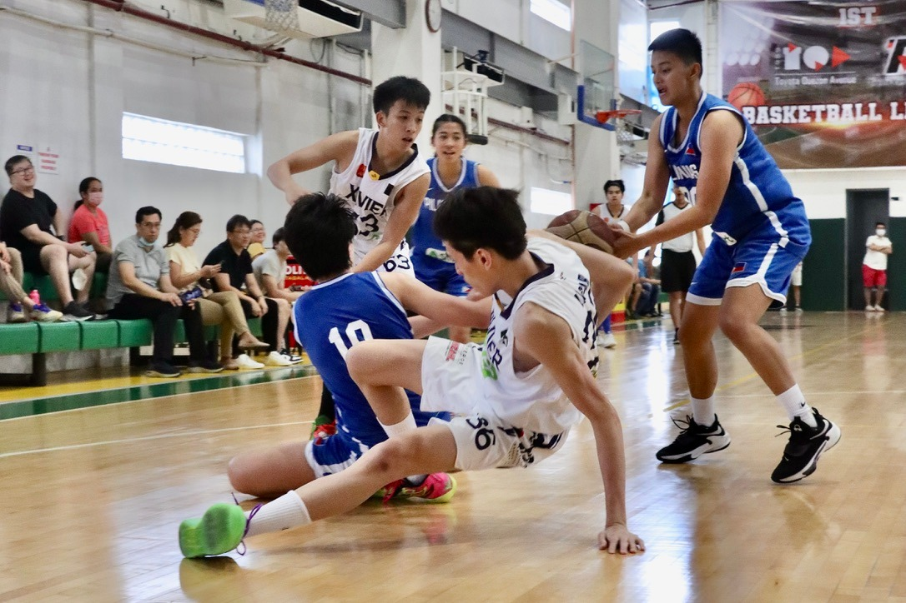

On a particular Saturday midmorning, Gilas Pilipinas assembled in a well-lit, air-conditioned gym six floors up in a roadside building in Quezon City. There were 15 of them, dressed up for a scrimmage against a younger but more physical and more athletic squad. Toward the end of the match, up 11 and the clock dwindling to its final minutes, Gilas continued to apply full-court pressure. One of the team’s guards, a star from Ateneo in the UAAP, nearly forced a turnover, only to get clocked—hard—in the jaw by an inadvertent elbow. The Eagles’ playmaker shook the hit off, stood up and chased down the opposing player and continued to hound him. Later, after ditching the No. 15 Pilipinas jersey for a white shirt, the player was asked about the elbow. The only answer offered was a shrug and a smile. “Part of the game.” Another smile.

Except that this was just a tuneup match and Gilas Pilipinas was nursing an 11-point lead and the player was defending like it was the last few seconds of a one-possession ballgame in an Ateneo-La Salle championship decider in the UAAP. Another shrug. In the dictionary of sports nonverbal language, the usually means: “It’s nothing.” This time, the player meant: “It’s nothing new.” This is how Gilas Pilipinas has been preparing for the Southeast Asian Games. Bodies crashing everywhere, lung-busting full-court pressure from start to finish, everyone rolling up their sleeves and fighting hard for one of 12 slots in the final roster. “I’ve been hit a lot of times so…” Jhazmine Jason said. Oh, yes, this is the Gilas Pilipinas women’s team. The oft-ignored, out-of-spotlight, underfunded Gilas Pilipinas squad that will be the only national basketball team defending a gold medal in Cambodia. And there’s a reason why the team, a collection of nonsalaried standouts showing up for practice every day, prepares with a sense of urgency as the SEA Games draws near. “We are the target of every team,” coach Pat Aquino told the Inquirer. “We can’t even prepare for one country anymore. Everyone wants to beat us.” “We know it’s gonna be hard, just like every other year, nothing’s gonna be given,” said guard Ella Fajardo. “But the things that we do behind the scenes, practicing every day … it [will show] on the court when we’re there [in Cambodia]. We’re doing everything on our part to prepare.” That means playing against teams like a boys squad from high school powerhouse Xavier and taking everything thrown at them, and using uncanny teamwork to negate their opponents’ strength and athleticism. “These girls are more than ready. They will mix it up regardless of who you put in front of them,” Aquino said. In Cambodia, the women will face teams that are looking to stop the Philippines from completing a “three-peat” and which have done extensive preparation—including competing among themselves—just to strip Gilas of its gold. But ask the women about the pressure that comes with that and they will just smile it off. “Pressure will always be there,” said Jack Animam, whose return to the national squad has generated a huge wave of optimism among her teammates. “We know that whatever we do, there will always be pressure. But among ourselves, we keep saying, ‘let’s not think about it, do what we’re supposed to do and just follow coach’s game plan.’”
That last part is what thrills Aquino the most. “You know, I’ve said this before, as a coach, whatever I teach them, I see them doing it,” Aquino said. “They can get really physical, sometimes more physical than men. If they want to grab for the ball they go out there and just dive for it. They really want to show everybody what they can do.” “They’ve won the gold medal back-to-back and yet, there they are, just eager to show more and prove themselves more,” Aquino added. That need to prove themselves more produces most of the pressure the team feels nowadays. “It seems like there’s a lot of pressure from the outside because we’re trying to get support, to try to hype up that we’re trying to get the three-peat,” Fajardo said. “But I think within ourselves, we’re very good at staying together … and building our confidence every day. We just focus on ourselves.” “We just ask the fans to continue the support,” Animam said. “We have something to prove, we’re exciting to watch and we’re doing this not just for ourselves but for our country.” “We hope to show fans that we deserve their trust and that we can play at a really high level,” team captain Janine Pontejos said. And so they collect floor burns while diving for loose balls and get hit hard in the jaw while applying pressure at garbage time—all during an exhibition match—just to earn a little of a country’s love and attention. These girls don’t know it yet, but they’re not the Gilas Pilipinas that has something to prove.